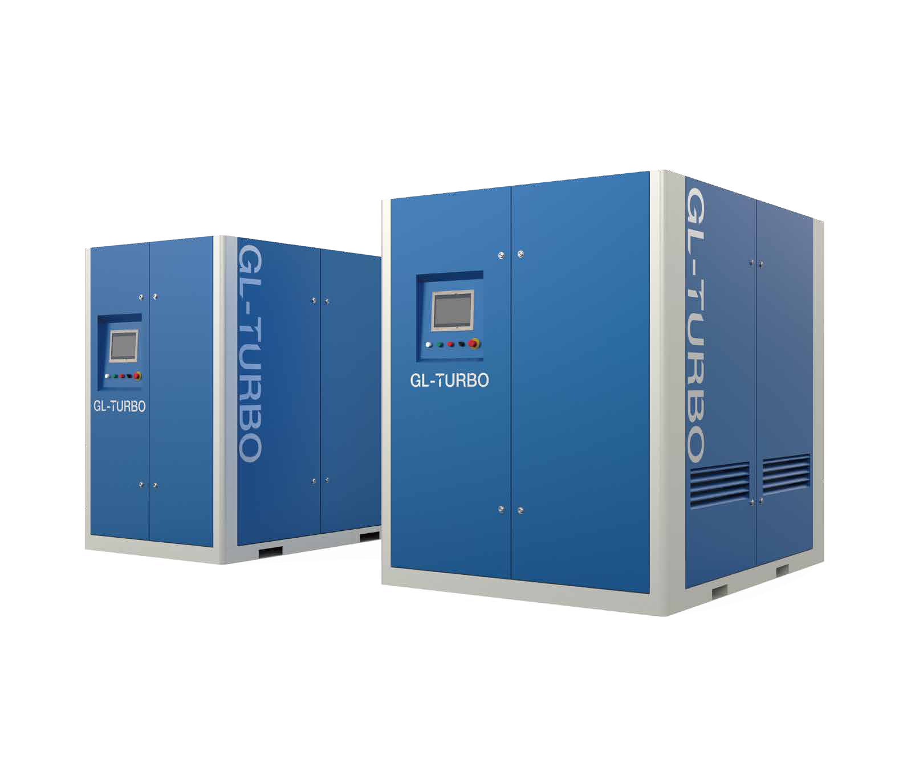
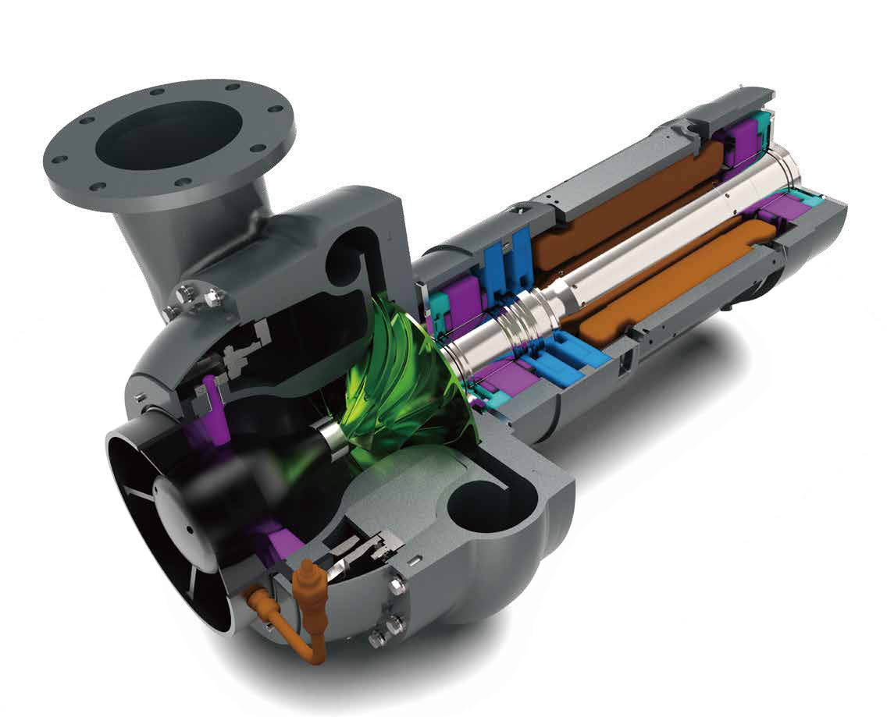
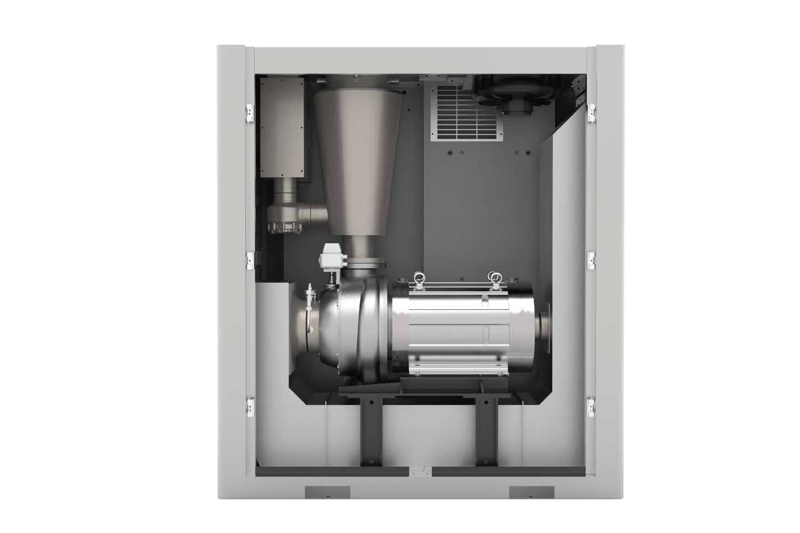

DT Series
DT Maglev Turbo Blower
55–400 kW | 1,900–13,800 m³/h | 0.4–0.9 bar pressure rise
The DT Series combines active magnetic bearings, a permanent magnet synchronous motor, inlet guide vanes, and variable frequency control. Its dual-control design supports a 30%–100% flow regulation range with oil-free operation and integrated surge protection.
- Inlet guide vanes and VFD provide dual control across a 30%–100% flow range.
- Five-degree-of-freedom active magnetic bearings with real-time rotor-position control.
- Contact-free magnetic-bearing operation requires no lubrication.
- Mechanical anti-surge sensors and control software help minimize surge.
- Auxiliary bearings and UPS support rotor protection and safe shutdown.
Active Magnetic Bearings
Real-time monitoring of the bearings and rotor supports stable suspension without mechanical contact during normal operation.
Efficient Drive
A permanent magnet synchronous motor and backward-curved impeller work with adjustable inlet guide vanes and variable speed control.
Protection & Cooling
Operating data is monitored for alarms and shutdown. DT1 and DT2 are air-cooled; DT3 and DT5 use self-circulating water cooling.